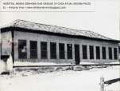
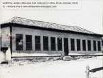

A Nossa Historia
A fundação de Sete Lagoas data do tempo da febre do ouro, quando Bandeirantes se internavam pelos sertões em sucessivos embates com as feras e com os índios. Por volta de 1667, chegaram às terras do município os primeiros europeus, componentes da Bandeira de Fernão Dias. Naquele tempo, receber do Rei o título de Barão, Marquês, Conde ou Duque era a maior honraria que se podia alcançar. Assim aconteceu com Fernão Dias Paes Leme: o Governador das Esmeraldas. Em 1677, já com 60 anos, Fernão ainda quis descobrir esmeraldas para o Rei de Portugal. Saiu de São Paulo e cruzou as terras de Minas Gerais até o Grão Mogol. Ao meio da jornada, internou-se pelos arredores na expectativa de descobrir alguma novidade que lhe fosse útil e ao Rei de Portugal. Foi então que encontrou, em um serrote das Sete Lagoas, um minério argentífero de singular beleza. Presume-se que o serrote a que se referem vários historiadores seja a Lapa do Chumbo, da Fazenda das Melancias e que foi pesquisado por vários mineralogistas, inclusive pelo engenheiro Dr. Teófilo Benedito Otoni, nome estreitamente ligado aos acontecimentos que marcaram a vida desta comunidade nos primeiros lustros deste século.
Fazenda da Pontinha
Fernão Dias trouxera consigo, além dos outros parentes, dois filhos: Garcia Paes que era legítimo; e José Dias, seu filho natural e de criação. Este, cansado de suas reiteradas tentativas no sentido de dissuadir o pai a prosseguir a árdua jornada que tomara a peito, revoltou-se contra ele, chefiando uma rebelião. Descoberta a conspiração, Fernão Dias sentenciou que o chefe da rebeldia pagaria com a própria vida o seu audacioso gesto.
 


Sua palavra foi cumprida à risca: José Dias foi enforcado à vista dos seus companheiros de expedição sendo estes expulsos da bandeira que tentaram enxovalhar. Desnorteados, os sediciosos deixaram o acampamento e saíram à deriva vindo acampar às margens do Ribeirão Matadouro, na planície das Sete Lagoas. A várzea do João Corrêa viu surgir então as primeiras casas que marcaram o nascimento de uma grande cidade. Em abono dessa assertiva, o apego ao bairro da várzea dos Corrêa e Pereira da Cunha que, segundo a tradição, descendem dos nossos primeiros povoadores. Em 1681, desbaratada a bandeira de D. Rodrigo de Castelo Branco, assassinado no município de Sabará. O local hoje denominado como "Fidalgo", integrado ao município de Pedro Leopoldo é parte dos componentes dessa expedição, constituída de sertanistas e índios, tomou rumo às Sete Lagoas, alojando-se no povoado que nascia. Tribos nômades e pacíficas percorriam toda a região e a sua assimilação com os novos moradores processou-se naturalmente. As uniões com as nativas tornaram-se comuns, formando novas famílias que proliferavam progressivamente e se mantinham dentro das normas do mais absoluto respeito. Em 1700, João Leite da Silva Ortiz, um típico representante da raça do sertanista de São Paulo, filho de Estevão Raposo Bocarro e de sua mulher, D. Maria de Abreu Pedroso Leme, sobrinha de Fernão Dias Pais e tataraneto de Brás Cubas, veio para Minas. O que caracterizava os paulistas nos primórdios do século XVIII era a instabilidade. Não se demoravam em lugar algum. Sempre à procura de melhores faisqueiras, aventuravam-se à descoberta de novos sertões. Este é o caso típico de João Leite da Silva Ortiz. Em janeiro de 1711, obteve a Sesmaria do Cercado. No mesmo ano, 8 de fevereiro, obtinha a de Sete Lagoas. Esta última por um lapso qualquer, não ficou registrada nos livros da Secretaria do Governo. Lá ficou apenas o título, com a página em branco.
Mas João Leite da Silva poucos anos permaneceu na posse do seu sítio das Sete Lagoas; dispôs dessa e da Sesmaria do Cercado, seguindo para São Paulo a fim de preparar expedição a Goiás. Em Minas, a Sesmaria das Sete Lagoas foi concedida a Antonio Pinto de Magalhães. Existe o documento da concessão da sesmaria, no qual Antonio Pinto de Magalhães afirma que a comprara de João Leite da Silva Ortiz, o qual ali se instalara no ano de setecentos. O povoamento inicia-se a partir de 1820, quando foi construída a capela de Santo Antônio das Sete Lagoas, ainda existente. Pelo exposto acima, a Casa Grande, que a tradição nos aponta como primitiva sede da Fazenda das Sete Lagoas parece ter sido construída pelo Sr. José Inocêncio Pereira.